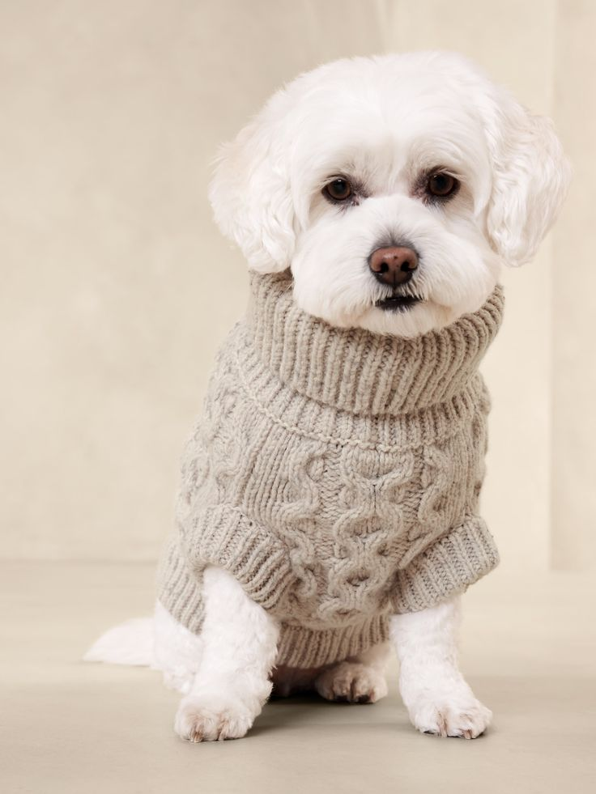
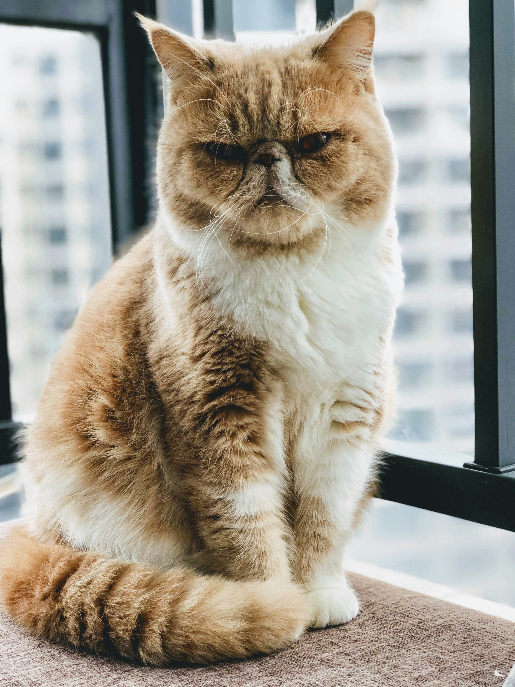
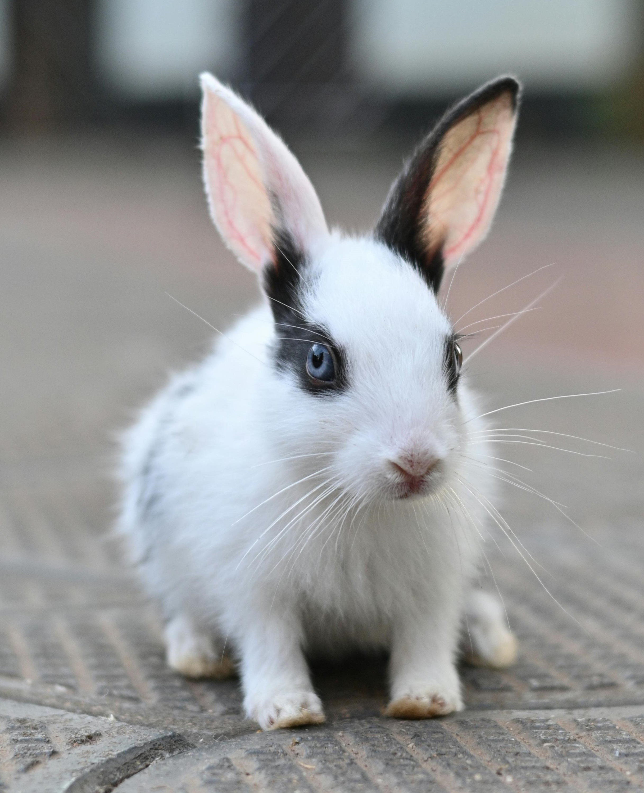
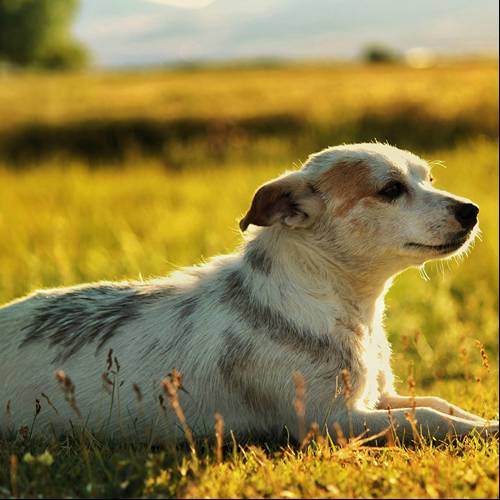
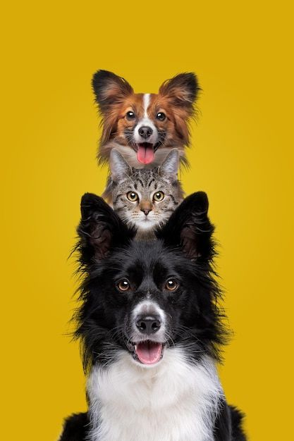
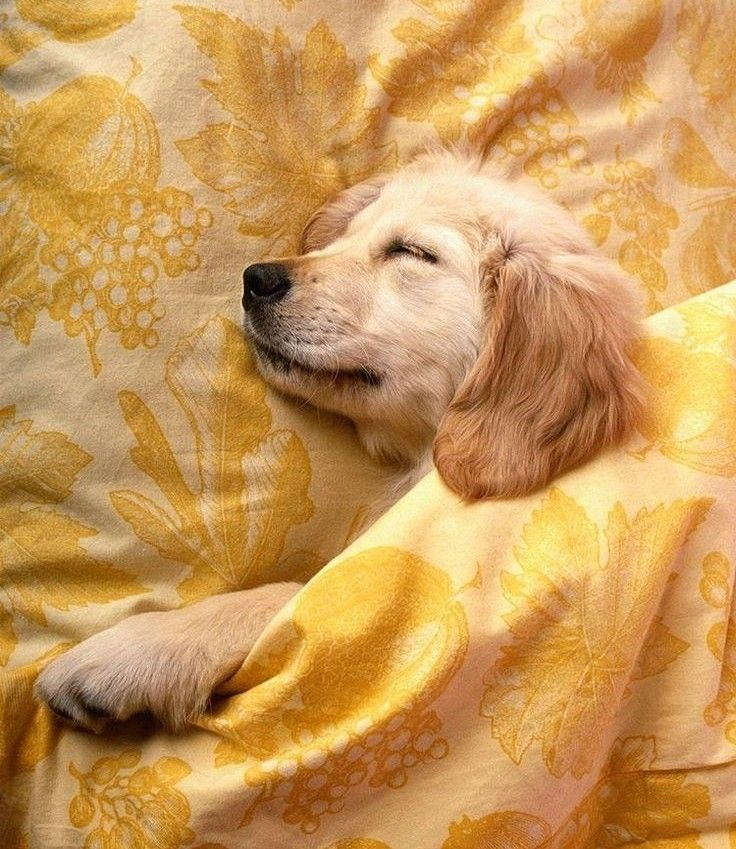

Dog · 2 years
Sunny
Playful, affectionate, and always ready for an adventure.
Meet your match
Every one of our animals has a big personality and an even bigger heart. Start with the kind of companion you’re looking for.
6 friends looking for home

Playful, affectionate, and always ready for an adventure.

A gentle observer with a fondness for sunny windows.

Curious, soft-natured, and full of charming hops.

Easy-going and happiest close to his people.

A warm cuddle companion with a playful streak.

Calm, sweet, and a fan of fresh greens.
Not sure where to begin?